ERP Invoice / Credit Note / Debit Note — PT Documentation
Client test evidence for invoice issuance, cancellation/correction, credit notes, debit notes, and full traceability in the Portuguese (PT) interface.
Screenshots: Place PNG files in document/images/ using the filenames shown under each placeholder. All UI screenshots must be captured with language set to Português (PT).
1. Test Environment
Test Data
| ERP version | [ERP Version / APP_NAME] |
|---|---|
| Language | Portuguese (PT) — UI must not show English or mixed labels |
| Test / demo company name | [Demo Company Name] |
| Purpose of the test database | Validate invoice lifecycle, cancel/void with credit note linkage, sales debit notes, and that cancelled documents remain traceable (no silent loss of fiscal history). |
| Test date | [YYYY-MM-DD] |
| System / module being tested | Faturação / Contas a Receber — Faturas, Notas de Crédito, Notas de Débito (vendas), Void Audit Log |
| Tester | [Tester Name] |
Action
- Log in to the test/demo company with PT language selected.
- Confirm company context and date of testing in this section (no screenshot required).
Expected Result
Environment details are recorded; system is ready for PT invoice testing.
2. Company Configuration
Test Data
| Company name | [Company Name] |
|---|---|
| NUIT | [NUIT / VAT Number] (stored as company VAT number) |
| Address | [Company Address] |
| Currency | [MZN / MT] |
| VAT / Tax configuration | [IVA rate / tax names, e.g. IVA 16%] |
| Fiscal period | [Fiscal Year / Period] |
| Document series / prefix | Invoice: [#Fatura] · Credit Note: [#NC] · Debit Note: [#ND] |
| Document void → credit note | [auto / manual / off] |
Action
- Open Configurações da Empresa (Company Settings).
- Verify name, NUIT (Número de IVA), address, currency, IVA, and document prefixes.
- Capture the settings screen in PT.
Screenshot
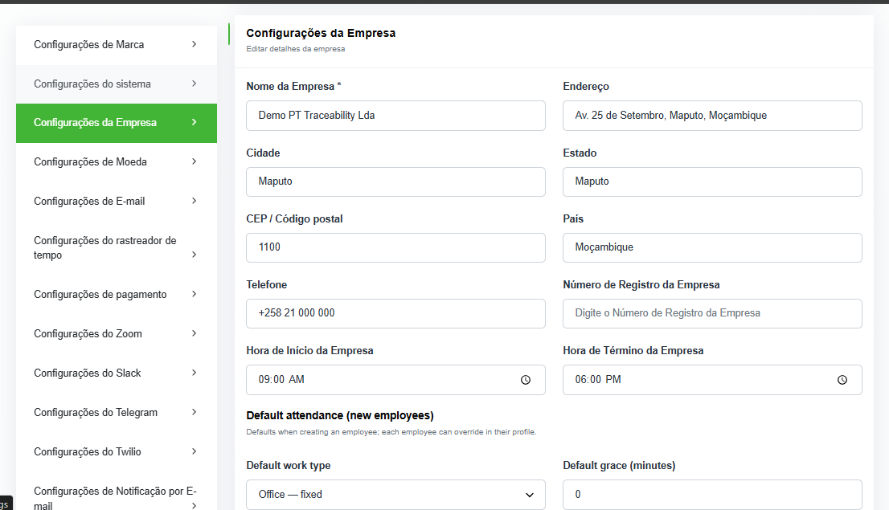
document/images/Expected Result
Company fiscal identity, currency, IVA, and document prefixes are correctly configured and visible in PT.
3. Master Data
Test Data
| Sample customer | [Customer Name] — NUIT: [Customer NUIT] |
|---|---|
| Sample supplier | [Supplier Name] — NUIT: [Supplier NUIT] |
| Sample product / service | [Product/Service Name] — Price: [Unit Price] |
| Tax / VAT setup | [Tax name & rate, e.g. IVA 16%] |
| Payment methods | [Cash / Bank Transfer / …] |
Action
- Open customer, supplier, and product/service master records.
- Confirm tax and payment method masters used on invoices.
- Capture PT screenshots for each sample record.
Screenshots
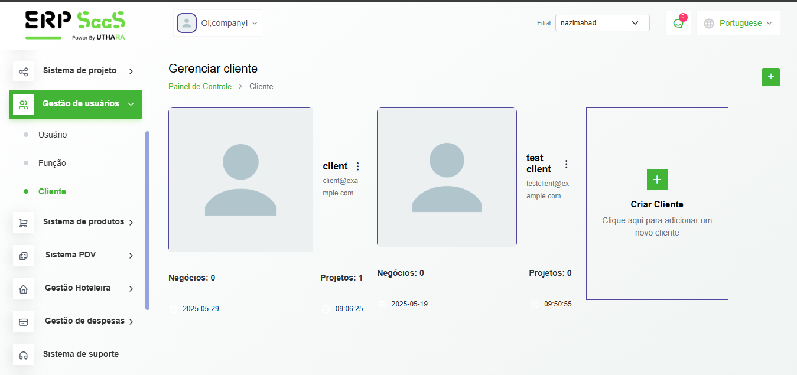
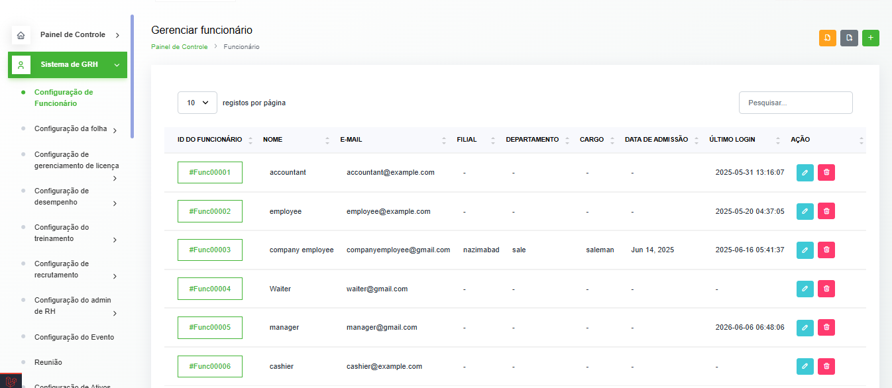
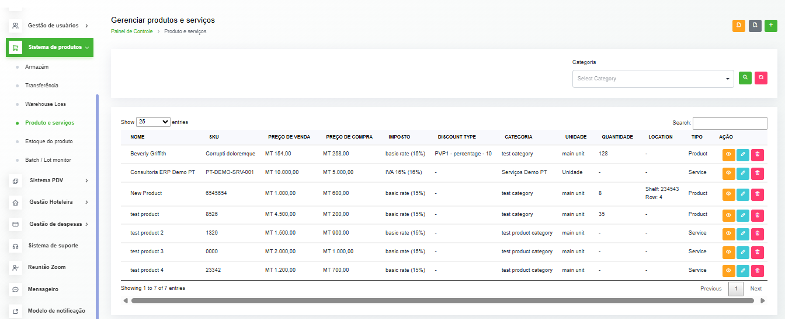
Expected Result
Master data required for invoice testing exists and is usable in PT.
4. Invoice Creation
Test Data
| Customer | [Customer Name] |
|---|---|
| Product / service | [Product/Service] |
| Quantity | [Qty] |
| Price | [Unit Price] |
| VAT (IVA) | [IVA amount / rate] |
| Subtotal | [Subtotal] |
| Total | [Total] |
| Invoice series / number | [#Fatura00001] |
| Date | [Invoice Date] |
| Initial status | Rascunho (Draft) |
Action
- Go to Faturas → Create invoice (
/invoice/create). - Select customer, add product/service line(s), quantity, price, and IVA.
- Save as draft and capture the create/view screen showing totals.
Screenshot
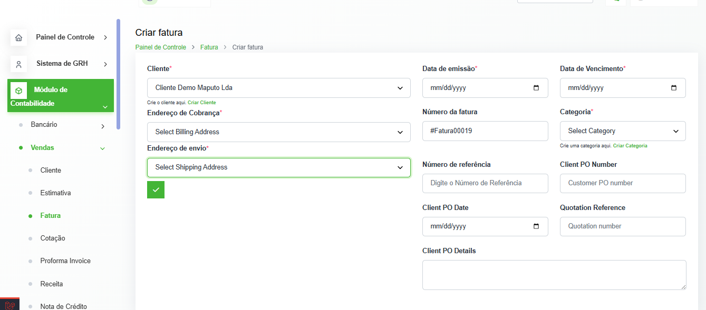
document/images/Expected Result
Invoice is saved with correct customer, lines, IVA, subtotal, total, series/number, and date.
5. Invoice Issuance
Test Data
| Invoice number | [#Fatura00001] |
|---|---|
| Status after issue | [Enviada / Sent or applicable PT status] |
| Customer | [Customer Name] |
| Total | [Total] |
| Issued / confirmed date | [Issue Date/Time] |
Action
- Open the draft invoice.
- Issue / send the invoice (
/invoice/{id}/sent). - Capture the issued invoice view showing number, status, customer, total, and date.
Screenshot
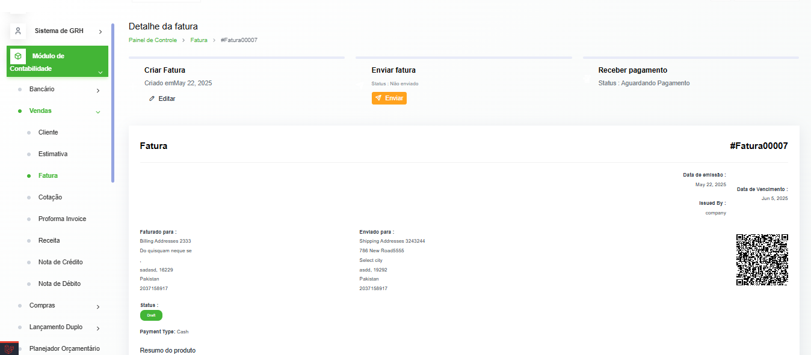
document/images/Expected Result
Invoice status changes from draft to issued/sent (or pending authorization if credit-limit hold applies); number and totals remain correct.
6. Invoice List
Test Data
| List must show | Invoice number · Date · Customer · Amount · Status |
|---|---|
| Target invoice | [#Fatura00001] |
Action
- Open invoice list (
/invoice— Faturas). - Locate the test invoice and capture the full list row(s) in PT.
Screenshot
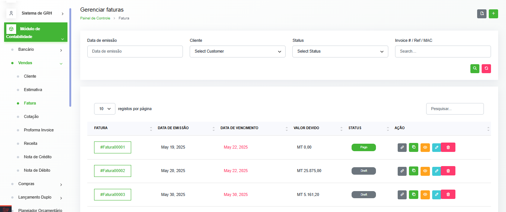
document/images/Expected Result
List displays invoice number, date, customer, amount, and status for the test invoice.
7. Invoice Delete / Cancel / Correction Test
Test Data
| Which invoice was tested | [Description / customer / amount] |
|---|---|
| Invoice number | [#Fatura00001] |
| Action performed | Cancel / void (system does not hard-delete issued fiscal documents; void sets status Cancelada) |
| Void reason | [Cancellation reason] |
| Create credit note on void | [Yes — auto / Yes — manual / No] |
Action
- Open the issued test invoice.
- Use Cancel / Void (document void modal) and confirm with reason.
- Observe system response (status Cancelada; optional Nota de Crédito creation).
- Capture void modal and/or post-void confirmation screen.
Screenshot
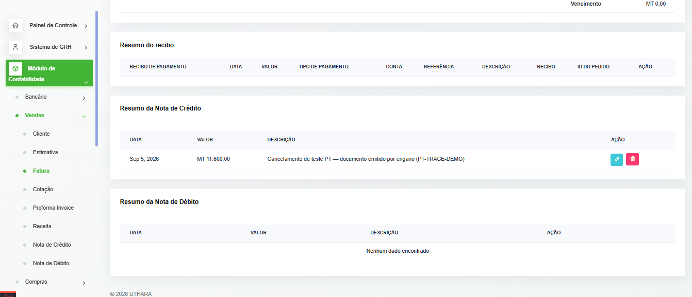
document/images/Expected Result
System cancels the invoice (status Cancelada). Invoice number is retained. If configured, a linked Nota de Crédito is created. Success message / UI confirmation is shown in PT.
8. Invoice Report After Delete/Cancel — Client Critical Requirement
Test Data
| Original invoice number | [#Fatura00001] |
|---|---|
| Status after action | Cancelada |
| Linked Credit Note | [#NC00001] (if created) |
| Void audit log | User / date / time / reason — [User · YYYY-MM-DD HH:MM] |
Action
- Re-open the cancelled invoice detail and confirm the record still exists (not deleted).
- Verify invoice number is still visible and searchable in the list/report.
- Confirm status shows cancellation information (Cancelada).
- Identify the related Nota de Crédito linked to this invoice.
- Open Void Audit Log and locate the void entry (user, date/time, reason, accounting note flag).
Screenshots (evidence pack)
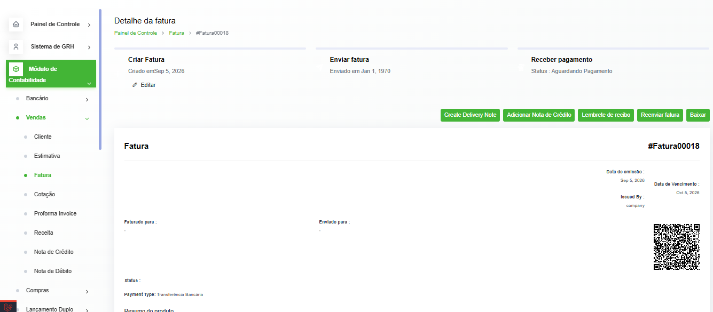
document/images/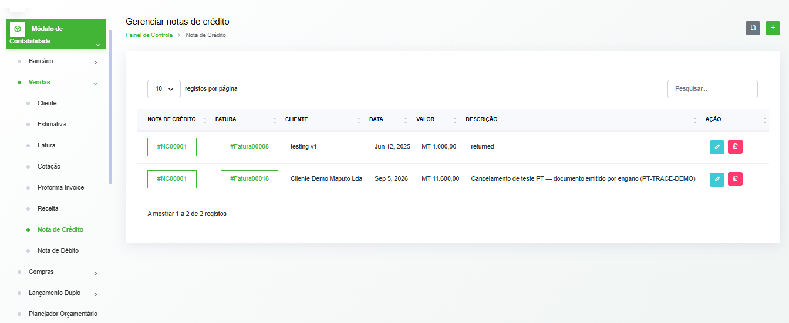
document/images/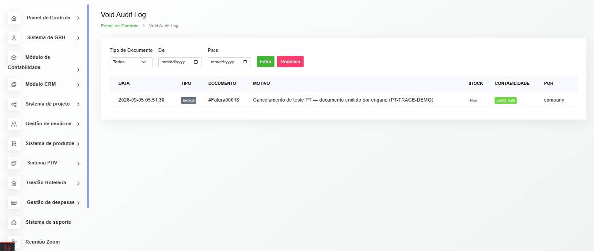
document/images/Expected Result — checklist
- Original invoice record / history is still available
- Invoice number remains traceable
- Cancellation / status information is available (Cancelada)
- Related Credit Note can be identified / linked
- Void log shows user and date/time when available
9. Credit Note
Test Data
| Credit Note number | [#NC00001] |
|---|---|
| Date | [NC Date] |
| Original invoice reference | [#Fatura00001] |
| Customer | [Customer Name] |
| Reason | [Reason / void reason] |
| Amount | [Amount excl. IVA if shown] |
| VAT (IVA) | [IVA] |
| Total | [NC Total] |
Action
- Open the Nota de Crédito created from void or created manually against the invoice.
- Verify number, date, original invoice reference, customer, reason, amount, IVA, total.
- Capture the credit note detail screen in PT.
Screenshot
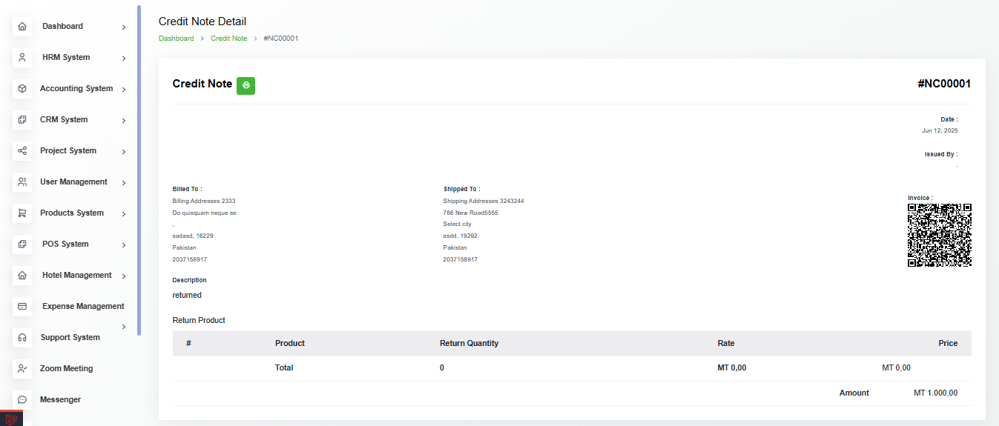
document/images/Expected Result
Credit note shows correct linkage to the original invoice and matching financial values.
10. Credit Note List
Test Data
| List URL / menu | /credit-note — Notas de Crédito |
|---|---|
| Target Credit Note | [#NC00001] |
Action
- Open the complete Credit Note list.
- Capture a screenshot showing the full list including the test Nota de Crédito.
Screenshot
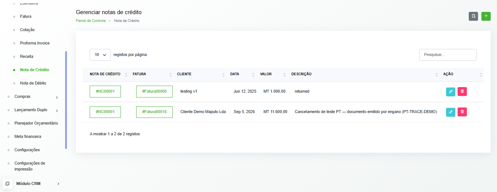
document/images/Expected Result
Complete list is visible in PT and includes the test credit note.
11. Debit Note (Sales)
Test Data
| Debit Note number | [#ND00001] |
|---|---|
| Date | [ND Date] |
| Customer | [Customer Name] |
| Original document / reference | [#Fatura00001] (if applicable) |
| Reason | [Reason] |
| Amount | [Amount] |
| VAT (IVA) | [IVA] |
| Total | [ND Total] |
Action
- Create or open a sales Nota de Débito (
/sale-debit-note/ create-sale-debit-note). - Record number, date, customer, original invoice reference (if any), reason, amount, IVA, total.
- Capture the debit note detail screen in PT.
Screenshot
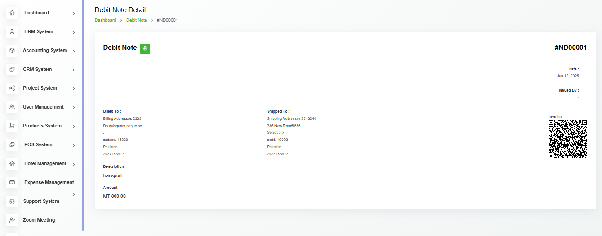
document/images/Expected Result
Sales debit note is recorded with correct customer/reference and financial values.
12. Debit Note List
Test Data
| List URL / menu | /sale-debit-note — Notas de Débito (vendas) |
|---|---|
| Target Debit Note | [#ND00001] |
Action
- Open the complete sales Debit Note list.
- Capture a screenshot of the full list in PT.
Screenshot
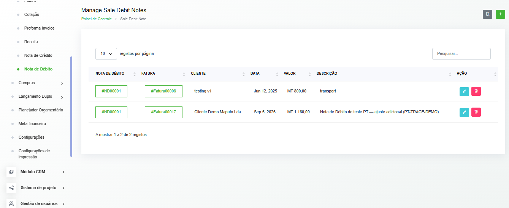
document/images/Expected Result
Complete list is visible in PT and includes the test debit note.
13. Traceability / History
Test Data
| Original invoice | [#Fatura00001] — still present, status Cancelada |
|---|---|
| Correction / cancellation | Void action + optional Nota de Crédito / Nota de Débito |
| Linked Credit Note | [#NC00001] |
| User / date / time / action | [User · YYYY-MM-DD HH:MM · void/cancel] |
Expected Result — checklist
- Original invoice record is not lost
- Correction / cancellation is traceable
- Credit Note is linked to the original invoice
- User / date / time / action are shown (Void Audit Log or equivalent)
14. PT Language Verification
Test Data
| Required language | Portuguese (PT) only — no English or mixed-language UI labels in screenshots |
|---|---|
| Key labels to verify | Fatura · Faturas · Nota de Crédito · Nota de Débito · Cancelada · IVA · Configurações da Empresa · Pago / Não pago |
Action
- Review every screenshot in this document with language set to PT.
- Confirm menus, buttons, statuses, and column headers are Portuguese.
- Capture one representative screen used for language sign-off (or reuse a clear list/detail screen).
Screenshot
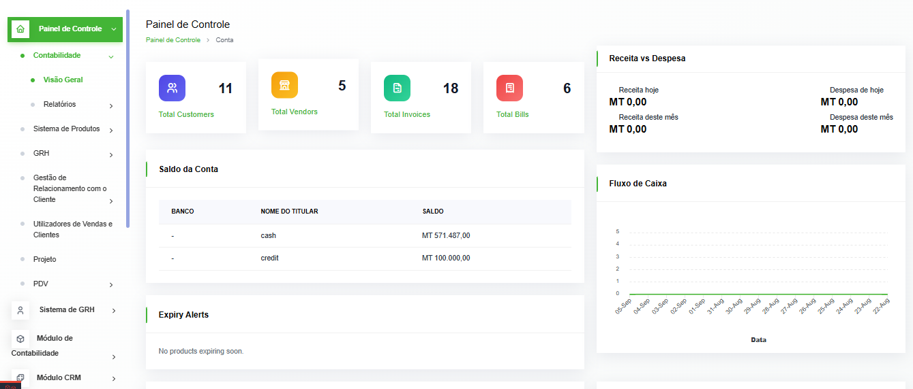
document/images/Expected Result — checklist
- Section 2 company settings screenshot is fully PT
- Section 4–6 invoice screens are fully PT
- Section 7–8 cancel / post-cancel screens are fully PT
- Section 9–10 credit note screens are fully PT
- Section 11–12 debit note screens are fully PT
- Section 13 traceability / void log is fully PT
- No English or mixed-language labels appear in any evidence screenshot